Persistent multi-robot patrolling is a complex real-world problem, requiring repeated observation of an environment while adapting to changes in layout and team composition, under three requirements: persistence, adaptability, and unpredictability. We present GeMPa, a multi-agent reinforcement learning policy for visibility-based persistent monitoring that commands body-frame velocities, with no patrol graph, task allocation or planner in the control loop. It combines a compact egocentric idleness summary and lidar ranges with attention over a variable number of teammates and recurrent temporal reasoning. Trained with proximal policy optimization on procedurally generated map layouts with one to four robots, a single shared policy transfers zero-shot to unseen maps and teams of up to sixteen robots. It attains the lowest mean idleness at every team size, with a mean per-map idleness reduction of 45.1% relative to the next best method, and idleness falls 91.5% from one to sixteen robots. Under map changes, robot losses, and communication delays at sixteen robots, its idleness increase is 85%, 89% and 76% smaller than the best baseline, while revisit-time variability remains comparable. The same weights run unmodified on simulated and physical Go2 quadrupeds at three sites, the largest eight times the average training map, matching simulated counterpart coverage to within 0.6 percentage points.
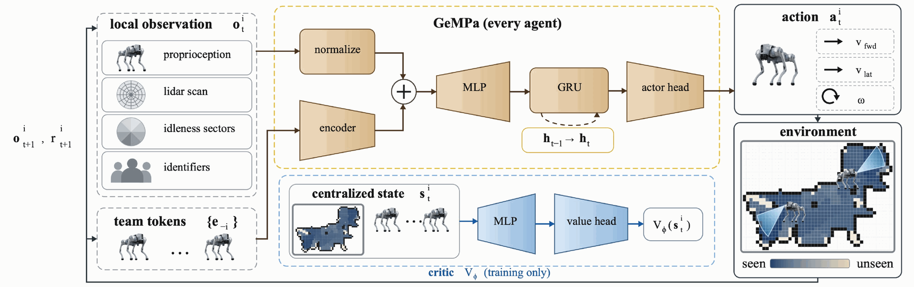
Every robot runs the same weights on its own pose and heading, a sixteen-ray lidar scan, and an eight-sector histogram of how stale the space around it is, in its own body frame. No patrol graph, no task allocation, no assigned region.
Teammates arrive as an unordered set of tokens carrying distance, bearing and relative heading. Cross-attention pools them into a fixed-width embedding, invariant to team size and ordering. That is what lets a policy trained with four robots run with sixteen.
A GRU carries what one observation cannot: where the robot came from and which regions it has already refreshed. Ablating it costs nothing at one robot and costs at every larger team, so the gain is coordination, not capacity.
The critic sees the full team state during training only. Each robot then acts on what it senses and on the tokens its teammates broadcast, so a lost robot or a delayed message degrades the team gradually instead of breaking an assignment.
Training runs on procedurally generated room layouts with one to four robots. Cells darken as they are observed and pale out as they go stale; the trail behind each robot is its recent path.
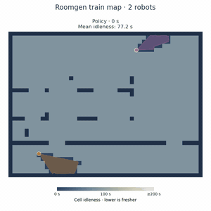
Training only ever sees one to four robots. The same checkpoint then runs with eight and sixteen without retraining, re-tuning or any reassignment: the team simply re-partitions the floor. Mean idleness falls from 57.0 s at two robots to 7.6 s at sixteen on this layout.
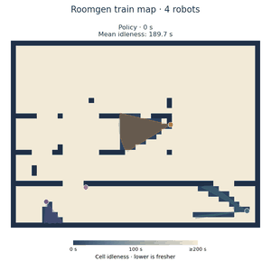
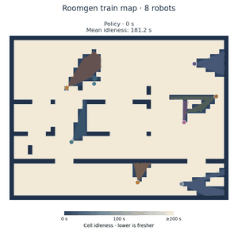
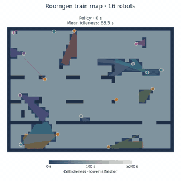
A single set of weights runs on layouts that share no structure with one another: open atria, rings, corridors, spokes, warehouse aisles, a parking lot, and real customer sites. All twelve are held out from training, all are patrolled by the same four-robot checkpoint.
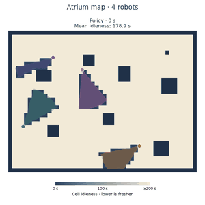
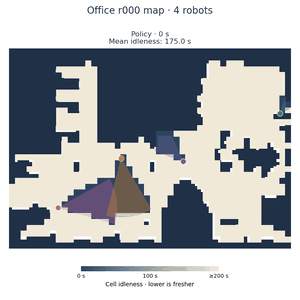
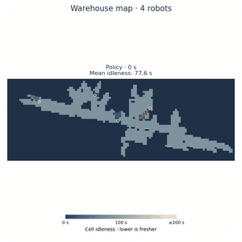
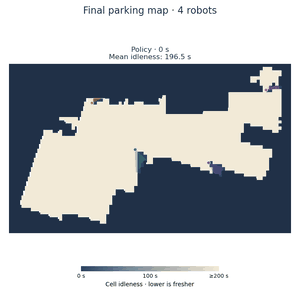
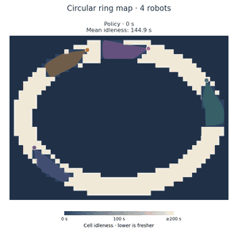
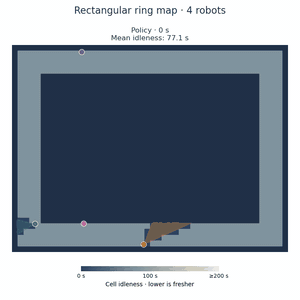
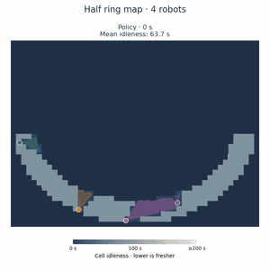
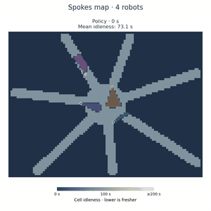
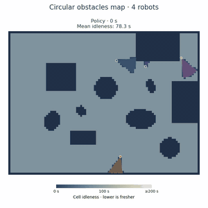
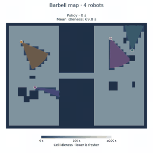
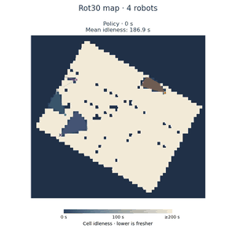
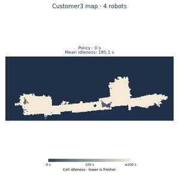
The same checkpoint drives physical Go2 quadrupeds in an office it has never seen. Nothing changes between these runs except how many robots are switched on.
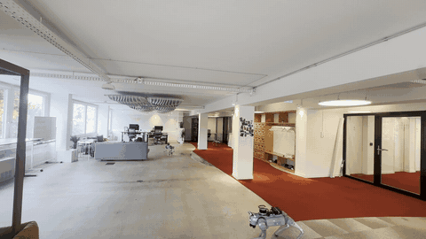
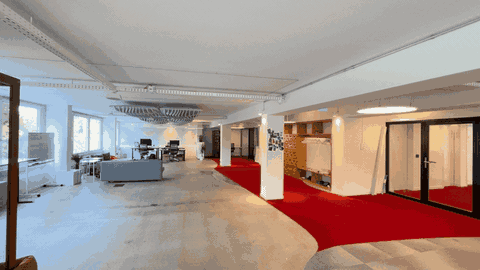
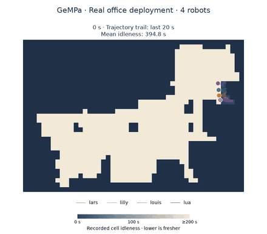
The same checkpoint runs on physical Go2 quadrupeds at two outdoor sites, neither of them seen in training. The industrial test site is eight times the average training map.
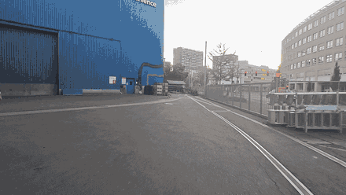
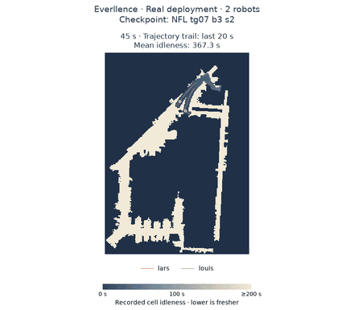
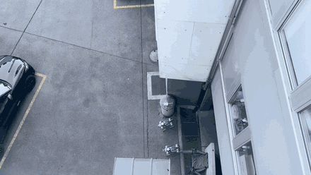
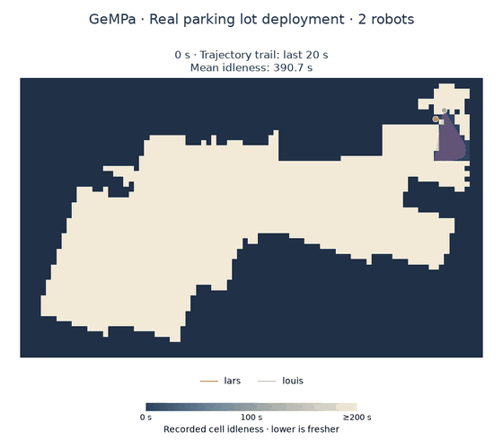
@inproceedings{gempa2027,
title = {GeMPa: Generalizable Multi-Robot Patrolling with Recurrent Attention Policies},
author = {Anonymous},
booktitle = {Under review},
year = {2027}
}